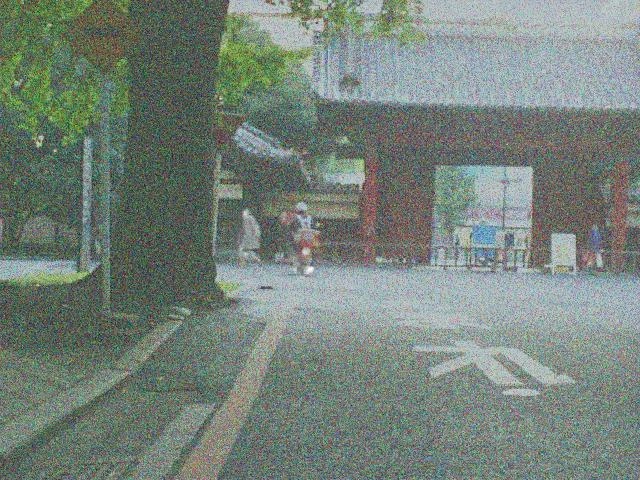
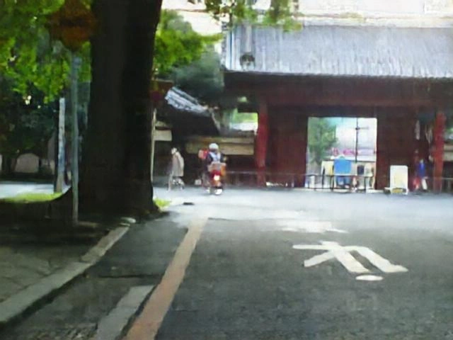
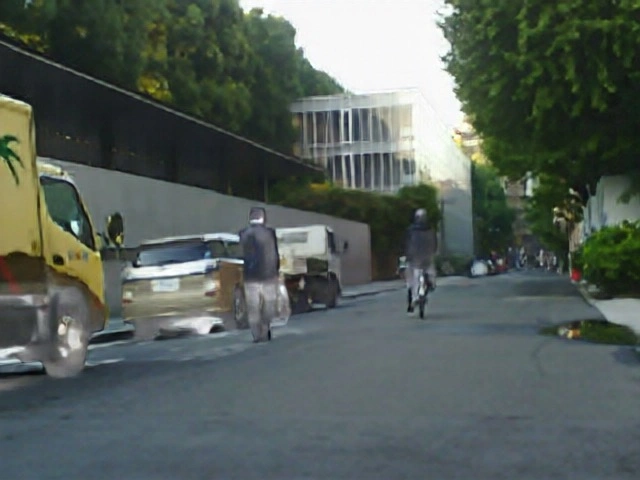
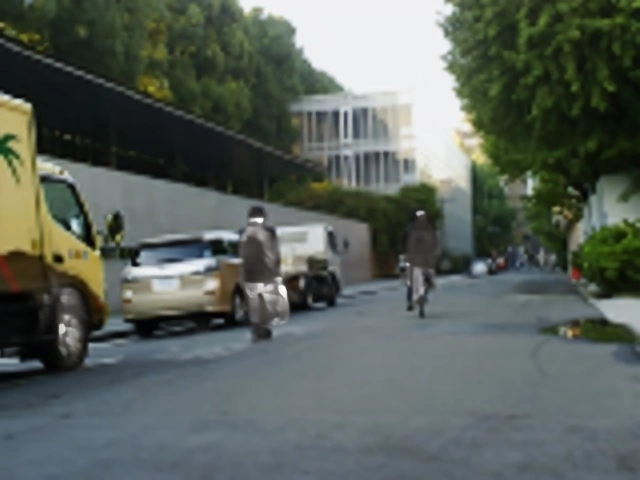

Qwen2.5-VL + Flow-GRPO
Controlled stochastic exploration enables group sampling. A vision-language model evaluates thermal prominence, texture fidelity, and overall naturalness.


Direct restoration & fusion
Inference time per sample
Faster than DRMF
M3FD & MSRS
Diffusion models are powerful at restoring degraded images, but their iterative sampling is slow. One-step distillation speeds things up, yet often smooths away the details.
OneHRL brings these strengths together. A distilled generator treats degraded infrared and visible inputs as an intermediate noisy state and restores them in one forward pass. Hybrid reinforcement learning then refines global naturalness and object-level structure through coarse-to-fine rewards.
Infrared and visible image fusion (IVIF) is essential for robust perception, yet existing methods remain limited under complex degradations. While diffusion models (DMs) offer powerful modeling capabilities to combat such degradations, their iterative process incurs high computational cost. One-step distillation effectively accelerates inference but typically leads to over-smoothed results. To resolve these limitations, we propose a one-step fusion framework with hybrid reinforcement learning, termed OneHRL. We treat degraded inputs as intermediate noisy states along a generative trajectory, enabling a distilled one-step generator to rectify them directly to the clean fusion results. Concurrently, to mitigate the over-smoothed results in distillation, we incorporate the Flow-GRPO paradigm to introduce stochasticity into the deterministic one-step generation. This restores the stochastic exploration necessary for sampling-based reinforcement learning. Furthermore, we design a coarse-to-fine reward that integrates a global semantic reward with an object-level reward. This hybrid reward ensures that the generator captures both naturalness and fine-grained texture. Extensive experiments demonstrate that our method achieves superior fusion quality and efficiency.


A frozen Feature Fusion Block combines the encoded modalities. The generator learns to rectify this degraded representation in a single forward pass, guided by reconstruction and diffusion-prior regularization.
Controlled stochastic exploration enables group sampling. A vision-language model evaluates thermal prominence, texture fidelity, and overall naturalness.
Instance masks focus the reward on thermal prominence, local sharpness, information entropy, infrared visibility, and structural similarity.
A reference-model constraint helps keep reinforcement learning close to the learned clean-image distribution.
VIS: Haze + Rain · IR: Noise + Stripe
| Method | CC ↑ | SCD ↑ | MI ↑ | VIF ↑ | MSE ↓ |
|---|
Score difference (OneHRL − DRMF)
@inproceedings{yu2026onehrl,
title = {Hybrid Reinforcement Learning for One-step Degraded
Infrared and Visible Image Fusion},
author = {Yu, Hongwei and Zha, Daoqing and Li, Jiawei and
Bai, Yancheng and Sun, Lei and Chu, Xiangxiang},
booktitle = {Advances in Neural Information Processing Systems},
year = {2026}
}